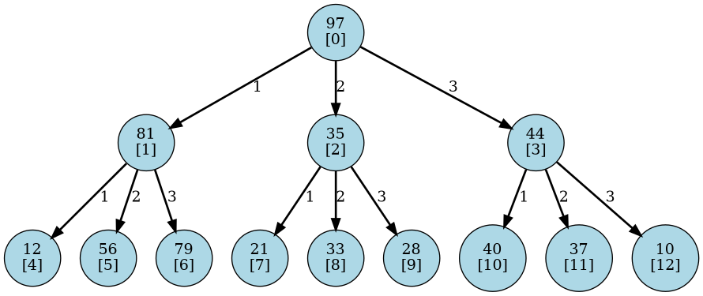
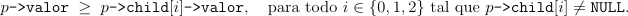

TriHeapArvore
Considere a seguinte estrutura de dados que representa um nó de uma árvore ternária, na qual cada nó pode possuir até três filhos:
struct NoArv{
int valor;
NoArv *child[3];
};
Cada posição do vetor child aponta, respectivamente, para um dos filhos do nó, ou contém NULL caso o respectivo filho não exista.
A figura a seguir ilustra um exemplo de árvore ternária:

Dizemos que uma árvore ternária satisfaz a propriedade de TriHeap Máximo se, para todo nó da árvore, o valor armazenado nesse nó é maior ou igual ao valor armazenado em cada um de seus filhos (quando existirem).
Em outras palavras, para todo nó p da árvore, deve valer:

Tarefa:
Implemente um algoritmo que, dado um ponteiro p para a raiz de uma árvore ternária, verifique se a árvore satisfaz a propriedade de TriHeap Máximo.
O algoritmo deve armazenar o valor:
No exemplo apresentado na figura acima, a árvore satisfaz a propriedade TriHeap Máximo e, portanto, o valor armazenado em resp deve ser:
resp => 1